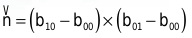
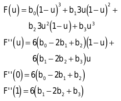

Bézier- und Spline-Flächen
Mathematik ausgereizt
Hinter den reizenden Kurven virtueller Gestalten und hinter malerischen, blühenden Landschaften verbirgt sich simple Mathematik.
Carsten Dachsbacher
Mit dem mathematischen Handwerkszeug aus PC Underground 01/01 (ab S. 258) zaubern Sie Bézier- und Spline-Flächen auf Ihren Bildschirm. Diese Art der Repräsentation von 3D-Modellen findet man in Computerspielen: in Torbögen, Brunnenschächten, Säulen oder Landschaften. Sie können damit auch Modelle aus gewölbten Flächen präsentieren.
Tensor-Produkt-Flächen
Aus parametrischen Kurven können Sie mit dem Tensor-Produkt-Ansatz Flächen zusammensetzen. Dazu benötigen Sie zwei Kurven:
Der Tensor-Produkt-Ansatz fasst beide Kurven unter einer Doppelsumme zusammen:

Wenn Sie die Terme in der obigen Formel anders klammern, lässt sich die Tensor-Produkt-Fläche als Kurve auf einer Kurve deuten. Sie berechnen den Funktionswert der einen Kurve (innere Klammer) und verwenden das Ergebnis als Stützpunkt für die zweite Kurve (äußere Summe).
Der Term dij fasst die Stützpunkte der Tensor-Produkt-Fläche zusammen. Allerdings haben Sie für die Fläche nicht (m+n+2), sondern (m+1)*(n+1) Stützpunkte. Das gibt Ihnen mehr Freiheit, die Fläche zu modellieren.
Welche Basisfunktionen (Bézier oder Spline) Sie verwenden, ist aus mathematischer Sicht nicht festgelegt. Praktiker kombinieren immer zwei Basisfunktionen gleichen Typs.
TP-Bézier-Patch
Von einem TP-Bézier-Patch spricht man, wenn Sie für beide Basisfunktionen Bézier-Kurven wählen. Diese Variante besitzt Eigenschaften, die Sie beim Modellieren und beim Rendering nutzen können.
TP-Bézier-Patches und andere TP-Flächen haben ein zweidimensionales Parametergebiet. Ein Punkt auf der Fläche hängt von zwei Koordinaten ab. Diese und das Kontrollpolygonnetz definieren die Fläche.
Der TP-Bézier-Patch hat von den zweidimensionalen Bézier-Kurven die Eigenschaft konvexe Hülle geerbt. Das bedeutet, dass die konvexe Hülle mit allen Knoten des Kontrollnetzes auch den TP-Bézier-Patch enthält. Wie sich die Kurve in den Start- und Endpunkten tangentiell an das Kontrollpolygon legt, so verhält sich die Fläche an den Eckpunkten des Kontrollnetzes. Anders ausgedrückt: Bei Bézier-Kurven endet die Kurve im ersten und letzten Kontrollpunkt und verläuft tangentiell am Kontrollpolygon. Ein TP-Bézier-Patch verläuft durch die Eckpunkte des Kontrollnetzes und dort tangentiell am Kontrollnetz. Daraus ergibt sich die Normale der Fläche an b00: 
Die wichtigste Eigenschaft für den Einsatz der Bézier-Patches in der 3D-Grafik ist die Affine Invarianz. Eine affine Transformation setzt sich aus Rotation und Translation (Verschiebung) zusammen. Mit dieser Eigenschaft können Sie die Fläche über die Punkte des Kontrollnetzes rotieren und verschieben und mit den gleichen Algorithmen neu auswerten. Wäre diese Eigenschaft nicht gegeben, würde die Fläche bei solchen Aktionen ihre Gestalt verändern.
Eine Eigenschaft der Kurven überträgt sich allerdings nicht auf den TP-Bézier-Patch: die Variation Diminishing Property. Die parametrische Fläche kann daher mehr Wölbungen oder Beulen aufweisen als die Basisfunktionen.
Die Algorithmen, die Sie bereits für den Kurvenfall kennengelernt haben, wie de Casteljau-Algorithmen zum Beispiel Unterteilung, Graderhöhung und die Konstruktion stetiger Übergänge, können Sie direkt von den Kurven auf die Flächen übertragen. Dies führt Ihnen unser Beitrag anhand des de Casteljau-Algorithmus vor. Dieser verwendet die Darstellung eines TP-Bézier-Patches als Kurve auf einer Kurve. Es bietet sich also an, zuerst die eine Kurve (die innere Klammer in der obigen Formel) mit dem de-Casteljau-Algorithmus auszuwerten. Damit erhalten Sie die Stützpunkte der zweiten Kurve, die Sie auch wieder auswerten. Wie Sie aus der vorigen Definition der TP-Flächen entnehmen, liefert jede Reihenfolge der Auswertungen, also u/v oder v/u, dasselbe Ergebnis. Eine Darstellung der Auswertungspyramiden des de-Casteljau-Algorithmus bei einem bikubischen TP-Bézier-Patch (in beiden Basisfunktionen kommen Terme bis zur dritten Potenz vor) finden Sie im Bild unten.
3x3-TP-Bézier-Patch
Mit bikubischen TP-Bézier-Patches lassen sich viele interessante Modelle konstruieren. Diese setzen sich meist aus mehreren Patches zusammen; dadurch können Sie 3D-Modelle mit zahlreichen Details versehen. Sie werten aus Basisfunktionen – durch geeignete Verfahren und unter Berücksichtigung eines Spezialfalls – noch schneller aus.
Der Spezialfall hier ist zum einen, dass Sie bikubische TP-Bézier-Patches betrachten, und zum anderen, dass Sie darauf 81 regelmäßig verteilte Punkte auswerten wollen – also die Fläche zu einem 9 x 9-Polygongitter tessellieren. Das heisst, Sie wandeln die Fläche in Polygone, zumeist Dreiecke, um.
Dazu nutzen Sie Central Differencing: Die Randkurven einer Bézier-Fläche sind Bézier-Kurven. Diese Randkurven können Sie sukzessive am Mittelpunkt und über die Fläche hinweg unterteilen. So berechnen Sie den Mittelpunkt einer Bézier-Kurve: Als erstes betrachten Sie eine Randkurve. Diese schreiben Sie als Taylor-Reihe. Dabei handelt es sich um die Darstellung einer Funktion durch eine Summe über ihre Ableitungen. In der folgenden Formel ist Fi(u) die i-te Ableitung der Funktion. Der Wert der Formel ist ein Punkt in der Nähe von u, also du entfernt.
Da Sie kubische Basisfunktionen betrachten, können Sie diese (mit den zunächst unbekannten Parametern a, b, c, d) und ihre Ableitungen wie folgt aufschreiben:
Ab der vierten Ableitung sind bei einer kubischen Funktion alle Ableitungen gleich Null. Weil die Taylor-Reihe keine Summe bis unendlich enthält, lässt sie sich leicht aufschreiben:
Für Punkte, die in der anderen Richtung von u liegen, erhalten Sie folgende Formel:
Wenn Sie die letzen beiden Gleichungen addieren, erhalten Sie das vielversprechende Ergebnis:
welche nach F(u) aufgelöst:
 ergibt.
ergibt.
Dabei halten Sie das Ziel im Auge, eine Bézier-Kurve in der Mitte zu unterteilen. So erhalten Sie die benötigte Menge an Stützpunkten entlang der Bézier-Kurve. Der Parameter u läuft von 0 bis 1, die Mitte der Kurve ist bei du = 0.5. Die eingesetzten Werte sind für den ersten Unterteilungsschritt.
F(0) und F(1) sind zwei Eckpunkte des Kontrollnetzes. Sie benötigen die zweite Ableitung in der Mitte einer Bézier-Kurve. Die von F(u) hergeleitete Formel hilft Ihnen weiter, wenn Sie darin F(u) durch F’’(u) ersetzen:
Den letzen Term können Sie vernachlässigen, da die vierte Ableitung immer gleich Null ist. In unserem Beispiel erhalten Sie:
Die zweiten Ableitungen an den Stellen u=0 und u=1 können Sie direkt berechnen. Dazu schreiben Sie die Summenform der Bézier-Kurve aus und leiten diese ab. Damit erhalten Sie folgende Resultate: 
Nun haben Sie alle Berechnungen erledigt, mit denen Sie eine Bézier-Kurve sukzessiv unterteilen. Alle vorkommenden Werte (F(0), F(1)....) ersetzen Sie in den weiteren Rechenschritten durch die entsprechenden Zwischenergebnisse: Wenn Sie eine Kurve unterteilt haben, erhalten Sie zwei neue, deren einer End- oder Startpunkt das Resultat der obigen Berechnung ist.
Doch woher bekommen Sie die zweite Ableitung, wenn Sie nicht mehr entlang einer Randkurve, sondern über die Fläche unterteilen? Das entspricht der Unterteilung einer Kurve im anderen Parameter. Dabei hilft Ihnen folgende schon bekannte Gleichung:
Sie können also die zweite partielle Ableitung in v-Richtung auf einer u-Randkurve berechnen, wenn Sie den Wert Fuuvv kennen. Fuuvv bedeutet die zweite Ableitung der Fläche in u- und v-Richtung. Auch diese erhalten Sie durch Mittelung zweier Werte an den Kurven Start- oder Endpunkten, welche die folgende Formel ausweist:
Es genügt also, den Wert an den Eckpunkten zu kennen, um den ersten Berechnungsschritt zu starten. Diese Werte müssen Sie direkt ausrechnen:
In die untere Gleichung setzen Sie die Ableitungen der Bernstein-Polynome ein:
Die Initialisierung einer Unterteilung berechet folgende drei Werte:
Sie unterteilen diese mit jedem Rechenschritt folgendermaßen
Alles zusammengenommen, können Sie im Vergleich zum de-Casteljau-Algorithmus die Anzahl der nötigen Additionen und Multiplikationen mehr als halbieren, was den Aufwand in einer zeitkritischen Anwendung rechtfertigt. Einen Vergleich und eine genaue Auswertung des de-Casteljau-Algorithmus und des Central Differencing können Sie im Artikel An In-Depth Look at Bicubic Bézier Surfaces von Mark A. DeLoura abrufen.
Auch für 4 x 4-TP-Bézier-Flächen bietet das Internet Informationen. Haim Barad beschreibt im Artikel Tessellation of 4x4 Bézier Patches for the Intel Pentium III Processor wie Sie solche Bézier-Patches mit Pentium-3-Befehlen effizient tessellieren können.
Andere Tensor-Produkt-Flächen

Mit jeder Basisfunktion können Sie Tensor-Produkt-Flächen erzeugen (vgl. PC Underground 1/01, ab S. 258). Genauso wie bei den Bézier-Flächen können Sie alle Eigenschaften, bis auf Variation Diminishing, von den Kurven auf die Flächen übertragen. Wenn Sie in einem kleinen Teil einer Spline-Fläche mehr Details modellieren wollen, benötigen Sie in jeder Randkurve mehrere Stützpunkte.
Angenehmer wäre eine Lösung wie rechts im Bild, bei der nur der Bereich mit lokalem Detail auch mehr Stützpunkte enthält. Ein Lösungsansatz dazu sind die hierarchischen Spline-Flächen:
F1(u,v) ist die grobe Fläche, F2(u,v) die kleine, detailreiche auf F1 aufgesetzte Fläche.
Parametrische Flächen trimmen
Nicht immer wollen Sie, dass das ganze Parametergebiet verwendet wird, sondern Sie wollen Ihre parametrische Fläche zurechtschneiden. Dabei spricht man vom Trimmen der Fläche. Bei der Tessellierung lässt sich das nicht direkt umsetzen, aber zur direkten Berechnung können Sie das nachfolgende Verfahren nutzen. Um eine Fläche zu trimmen, verwenden Sie im Parametergebiet eine geschlossene Kurve und ein Flächenschema. Ermitteln Sie für jedes Koordinatenpaar (u,v), ob es innerhalb oder außerhalb des getrimmten Bereiches liegt. Die geschlossenen Kurven markieren den getrimmten Bereich. Dazu bedienen Sie sich des so genannten Odd-Even-Tests: Vom Punkt (u,v) im Parametergebiet ausgehend verfolgen Sie eine Halbgerade in eine beliebige Richtung. Nun zählen Sie die Anzahl der Schnittpunkte der Halbgerade mit den gegebenen Kurven. Bei einer ungeraden Anzahl von Schnittpunkten liegt (u,v) im getrimmten Bereich, sonst außerhalb.
Einen interessanten Artikel über NURBS (Non-Uniformal Rational B-Splines, eine Variante von Splines) finden Sie bei Intel.
Patches rendern
Die besten Algorithmen, um Flächen zu berechnen, nutzen Ihnen nichts, wenn Sie diese nicht darstellen können. Mit OpenGL bringen Sie mit relativ wenigen Befehlen die Patches auf den Bildschirm. Einen einfachen Start, mit dem Sie OpenGL im Fenster- und im Vollbild-Modus in beliebiger Auflösung und Farbtiefe verwenden können, finden Sie im Quellcode auf der Heft-CD im Verzeichnis unter PC Underground.
Um die parametrischen Flächen zu rendern, positionieren Sie zuerst den Betrachter. Diese Information speichert OpenGL in der Projektionsmatrix:
glMatrixMode(GL_PROJECTION);
glLoadIdentity();
gluPerspective(45.0f, aspectratio, 1.01f, 1000.0f);
glTranslatef(0.0f,0.0f,-120.0f);
Die Transformationen der Polygon-Daten speichern Sie in der Modelview-Matrix:
glMatrixMode(GL_MODELVIEW);
glLoadIdentity();
Hierbei verfügen Sie über folgende Befehle, um Polygone im Raum um eine Achse zu drehen, zu verschieben (Translation) oder in der Größe zu verändern (Skalierung):
void glRotatef(GLfloat winkel, GLfloat x,GLfloat y,GLfloat z);
void glTranslatef(GLfloat x, GLfloat y, GLfloat z);
void glScalef(GLfloat x, GLfloat y, GLfloat z);
Nachdem Sie diese Befehle mit angepassten Parametern ausgeführt haben – eine Implementation können Sie unserem Beispielprogramm entnehmen – können Sie die Polygone zeichnen. Zunächst bestimmen Sie die Zeichenfarbe:
glColor3f(GLfloat rot, GLfloat green, GLfloat blue);
So können Sie Dreiecke, die Sie durch das Tessellieren erhalten haben, auf verschiede Arten ausgeben. Geben Sie einzelne Dreiecke aus, indem Sie deren Eckpunkte angeben:
glBegin(GL_TRIANGLES);
for(alle Dreiecke)
{
glVertex3f(x1, y1, z1);
glVertex3f(x2, y2, z2);
glVertex3f(x3, y3, z3);
}
glEnd();
Alternativ können Sie Triangle Strips zeichnen. Dabei nutzen Sie, dass Sie einen Streifen von Dreiecken rendern, bei dem sich zwei aufeinander folgende Dreiecke eine Kante teilen. Mit dieser Variante erreichen Sie eine deutlich höhere Performance, weil weniger Daten an OpenGL übertragen werden und OpenGL weniger Aufwand betreiben muss.
Die Anzahl der Dreiecke, die Sie bei der Tessellierung erzeugen, ist nicht nur für die Frame-Rate beim Rendern interessant. Je näher eine Fläche am Betrachter ist, desto feiner müssen Sie tessellieren, damit sie glatt wirkt. Flächen, die nur klein am Bildschirm zu sehen sind, lassen sich nur grob tessellieren. Wie Sie sehen. Besteht ein 3D-Modell aus parametrischen Flächen, benötigen Sie – anders als bei polygonalen Modellen – nur eine Repräsentation, um verschiedene Detailstufen zu berechnen.
Parametrische Flächen texturieren
Eine Textur ist ein zweidimensionales Muster, das Sie auf 3D-Objekte oder Flächen kleben. Nutzen Sie die beiden Parameter u und v aus Ihrem zweidimensionalen Parametergebiet, um parametrische Flächen zu texturieren. Die Texturkoordinaten in OpenGL geben Sie für jeden Vertex an:
glTexCoord2d(u, v);
glVertex3f(x, y, z);
Vorher laden Sie eine entsprechende Textur und übergeben sie an OpenGL. Verwenden Sie die Funktionen aus der glaux-Library (Datei: glaux.h). Mit wenigen Codezeilen können Sie eine Textur laden und für OpenGL verwenden, wobei Sie zuerst eine bmp-Datei in den Speicher laden:
AUX_RGBImageRec *texture;
texture = auxDIBImageLoad("texture.bmp");
Lassen Sie sich von OpenGL eine ID geben, mit der Sie Ihre Textur bezeichnen wollen:
GLint textureID;
glGenTextures(1, &textureID);
Schalten Sie OpenGL ein:
glBindTexture(GL_TEXTURE_2D, textureID);
Stellen Sie die Texturfilter ein: wie die Textur gerendert werden soll, wenn sie gedehnt oder gestaucht wird:
glTexParameteri(GL_TEXTURE_2D,
GL_TEXTURE_MAG_FILTER, GL_LINEAR);
glTexParameteri(GL_TEXTURE_2D,
GL_TEXTURE_MIN_FILTER, GL_LINEAR);
Im nächsten Arbeitsschritt übergeben Sie OpenGL die Texturdaten:
glTexImage2D(GL_TEXTURE_2D, 0, 3,
texture->sizeX,
texture->sizeY,
0, GL_RGB, GL_UNSIGNED_BYTE,
texture->data);
und können den jetzt nicht mehr benötigten Speicher wieder freigeben:
free(texture->data);
free(texture);
Mit folgenden Befehlen schalten Sie das Texturieren an oder aus:
glEnable(GL_TEXTURE_2D);
glDisable(GL_TEXTURE_2D);
Bei Texturen können Sie zu jedem Texel (ein Bildpunkt der Textur) nicht nur die Farbe, sondern auch einen Alphawert angeben. Der Alphawert steht für die Opakheit (Sichtbarkeit als Gegensatz zur Transparenz) eines Texels: Der Wert (1.0) steht für nicht transparent, 0.0 für durchsichtig. Sie können eine Fläche mit einer Textur vollständig überziehen und auf dieser die unsichtbaren Teile mit dem entsprechenden Alphawert markieren. Weisen Sie OpenGL an, diese Teile der Fläche nicht zu zeichnen. Dabei hilft Ihnen der Alpha-Test, den Sie wie folgt aktivieren und verwenden:
glEnable(GL_ALPHA_TEST);
glAlphaFunc(GL_GREATER);
Damit verfügen Sie über eine Reihe von Methoden, um parametrische Flächen zu berechnen und einzusetzen. In Computerspielen können Sie den Einsatz dieser Verfahren beobachten.